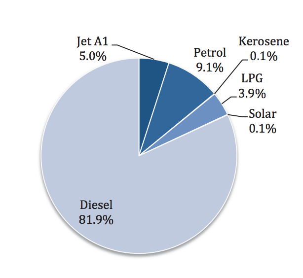

| To recognize the status of Maldives as a nation suffering from the adverse impacts of climate change and to build its capacity to ensure a safe, sustainable and resilient and prosperous future |
|---|
The Maldives is a low lying island nation in the Indian Ocean with a population of 341,256 (2014). The country consists of about 1190 islands and the population is distributed over approximately 197 inhabited islands. The country’s main economic sectors are tourism and fisheries, both of which are extremely climate- sensitive.
The challenges Maldives faces in the context of climate change and development are similar to other small island nations. These challenges include, but are not imited to, the low lying nature of the islands, high population density, high levels of poverty, and a dispersed geography. Because Maldives is a small low lying island nation, its vulnerability to climate change impacts and associated extreme weather events and disasters are significantly greater due to limited ecological, socio-economic, and technological capacities. Maldives’ geography also makes communication difficult and transport expensive. Maldives’ small, physically isolated economy is highly susceptible to global influences and shocks.
Continuous efforts are being undertaken to increase adaptation actions and opportunities, and to undertake low emission development. However, limited financial resources, capacity and technology remain as major challenges in addressing the impacts of climate change.
Maldives’ high level of fuel imports poses a number of challenges. The country’s energy demand is completely met by imported fossil fuel. Therefore it is imperative that the Maldives explore, develop and deploy indigenous, clean and renewable sources to meet energy demand and ensure energy security.
Maldives’ 2011 energy balance shows that there was approximately 313 kilo tonnes of oil equivalent (ktoe) of energy consumed in the Maldives of which over 80% was from imported diesel oil as shown in Figure 1. Energy consumption contributes to about 1.04 million tonnes of CO2 emissions in 2011 which is about 0.003% of global emissions. Energy consumption in various sectors constitutes a major share of the country’s GHG emissions. Although there has been some solar photovoltaic (PV) penetration, this amount is insignificant compared to the country’s energy demand.

Figure 1. Energy consumption by source in the Maldives for 2011
Considering the growth rate of the imported fossil fuel usage in the country, it is estimated that under the BAU scenario will generate about 3.3 million tonnes CO2 equivalent by year 2030. Maldives intends to take actions and undertakings to reduce unconditionally 10% of its GHG emissions (under a BAU) by the year 2030. These actions and undertakings could be scaled-up to 24% in a conditional manner, in the context of sustainable development, supported and enabled by availability of financial resources, technology transfer and capacity building.
These scenarios are depicted in the Figure 3 below.
Figure 3. Projected GHG emissions from energy consumption for the Maldives
Maldives aims to achieve a low emission development future and ensure energy security.
Unconditional Reduction
“In accordance with Decisions 1/CP.19 and 1/CP.20, Maldives communicates that it intends to reduce unconditionally 10% of its Greenhouse Gases (below BAU) for the year 2030”
Conditional Reduction
“The 10% reduction expressed above could be increased up to 24% in a conditional manner, in the context of sustainable development, supported and enabled by availability of financial resources, technology transfer and capacity building.
| Timeframe | 2021-2030 |
|---|---|
| Type of Contribution | Maldives is focusing its efforts, actions and undertakings in reducing its GHG emissions in the energy sector. These actions and undertakings will be based on strategies and sectoral action plans designed, amongst others, for the following areas of intervention: energy, tourism, waste, water, and building sectors. |
| Sectors |
|
| Gases | CO2, CH4 Contribution of other GHGs like Sulphur hexafluorides (SF6) and Nitrous oxides (N2O) are significantly low and hence not considered |
| Accounting Methodologies | For the purpose of this INDC GHG emissions have been derived using the 1996 Intergovernmental Panel on Climate Change (IPCC) Guidelines for National Greenhouse Gas Inventories based on the Sectoral approach. Further, the following methodology was adopted for the GHG abatement costs analysis.
|
| Fairness and Ambition | Despite the Maldives’ dependence on fossil fuels, its global GHG contribution is only 0.003%. However, Maldives is taking actions and undertakings in accordance with common but differentiated responsibilities and respective capabilities to achieve the ultimate objective of United Nations Convention Framework on Climate Change. The main area of focus for mitigation is fuel switching to alternative energy options, which is severely constrained by the limited land area, geographic isolation of islands and geographic dispersion of populations. Solar irradiance is available in the country throughout the year, however due to lack of technical capacity, limited land area, already established diesel based power generation systems and high investment costs pose a major challenge to the introduction of solar PV systems in the country. Although ocean currents and the waves surrounding each island might be the perfect renewable energy resource for the Maldives and other SIDS, the technologies to harness them are still at pilot stages around the world and commercially not available. Wind resources are low due to the low lying and flat nature of the country, but efforts are ongoing to incorporate it into the energy mix. These unfavorable conditions and barriers severely limit the use of alternative energy sources in the Maldives and have resulted in Maldives being heavily dependent on imported fossil fuels. As Maldives is already facing the consequences of extreme and slow onset events, there is a need for urgent and immediate adaptation actions. Maldives is undertaking a number of adaptation actions through the use of domestic and international resources most of which addresses immediate needs of the country. Considering these constraints, challenges and the increasing vulnerabilities to the adverse impacts of climate change and the insignificant share of global GHG emissions, the Maldives’ INDC is highly equitable and ambitious. |
| Institutional Arrangement | The Maldives’ Intended Nationally Determined Contributions (INDC) was developed through extensive consultations with representatives of the general public, government institutions, the private sector, non-governmental organizations and other relevant stakeholders. The Ministry of Environment and Energy is the main executing agency of the INDC process in close collaboration with other ministries and stakeholders. The executing agency will undertake monitoring, reporting and verification (MRV). Public awareness, capacity building, development of strategies, supportive mechanisms, and monitoring of financial flow for implementation will be undertaken by the executing agency. |
| Means of implementation | Actions and undertakings in this INDC will be carried out through synergizing international and domestic support. The successful implementation of both adaptation and mitigation actions and undertakings of the Maldives require provisions of adequate and predictable financial resources, transfer of environmentally sound technologies and capacity building support. |
Maldives aims to undertake adaptation actions and opportunities and build climate resilient infrastructure to address the current and future impacts of climate change.
As a minimal contributor to global GHG emissions, Maldives places a significant priority on adapting to the adverse impacts of climate change.
| Enhancing Food Security | Agriculture and food production is very limited in the Maldives due to land scarcity, poor soil conditions and limited water resources.
The Maldives, is a highly import oriented economy with respect to its staple food requirements. Moreover, the extensively scattered and irregular geography results in tremendous barriers and added risks towards adequate storage and distribution facilities especially in order to handle unexpected market irregularities.
|
| Infrastructure Resilience | Considering the highly vulnerable nature of the Maldives the critical infrastructure in the country require additional protection from the potential adverse impacts of climate change. The Ibrahim Nasir International Airport, and other international and domestic airports and sea-ports are crucial infrastructure in the Maldives. Increasing resilience of island communities is a critical challenge, which needs to be addressed to meet the adverse impacts of climate change.
|
| Public Health | Mortalities due to vector borne diseases have been identified as an emerging health challenge while water borne disease incidences are high during extreme weather events as a result of inadequate access to safe water and sanitation. However, with present data management methods, it is difficult to use existing health records to research the effects of climate change on human health. There is an urgent need to study the effects of climate change on the prevalence of vector borne diseases in the Maldives.
|
| Enhancing Water Security | The Maldives has very limited freshwater resources. The country’s freshwater resources exist as groundwater in the form of a thin fresh water lenses. In most of the islands, the groundwater is not suitable for potable use due to saltwater intrusion and poor water quality. Climate change is expected to pose further risks to availability, accessibility and quality of water sources. Rainwater is the main source of drinking water in more than 90% of the outer islands. Groundwater is used for other domestic purposes and agriculture. Changes in average annual and temporal patterns of the rainfall have led to localised water stress in a large number of islands requiring augmentation by desalination alternatives and transportation of water resources to water stressed locations.
|
| Coastal Protection | The islands of the Maldives are low lying and beach erosion is widespread causing significant loss of land and costal infrastructure. Priority is given to protect the human settlements and infrastructure of inhabited and resort islands.
|
| Safeguarding coral reef and its biodiversity | Coral reefs are an important contributor the economy supporting tourism and fisheries. The reefs support rich biodiversity providing food and livelihoods to island communities. This vital ecosystem is highly sensitive to changing sea surface temperature and other climatic factors. The evidence from the reefs of the Maldives supports that warming of the ocean surface leads to significant coral bleaching. In some instances, coral reefs surrounding the islands are stressed due to land based sources of pollution.
|
| Tourism | Climate change would have implications on the tourism industry developed around the clear water surrounding the islands, white sandy beaches and vibrant coral reefs.
|
| Fisheries | Tuna fisheries are an important economic sector in the Maldives. Live bait is a prerequisite for the unique pole and line fishery which is sensitive to the monsoonal changes and climate variability. Tuna is expected to move deeper waters due to impacts of climate change.
|
| Early warning and Systematic Observation | Climatological measurements are limited due to capacity constraints and inadequate resources. Improvement of climate data collection, management and forecasting remains a critical gap area.
|
| Cross Cutting Issues |
Finance
Climate governance and capacity building
|